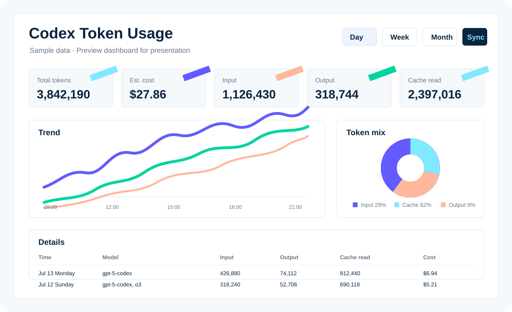

Aggregate tokens and costs by time range to understand overall usage at a glance.
Windows Utility / Codex Usage
Codex Token Usage Dashboard
A local Windows dashboard that reads ccusage offline data for Codex tokens, cache activity, costs, and intraday trends in 30-minute intervals.
DASHBOARD PANEL
A focused local dashboard for everyday use.

Break down input, output, cache read, and cache creation to understand cost structure.
Inspect a single day in 30-minute intervals to identify high-usage periods.
PROJECT NOTES
Turn local records into a readable usage dashboard.
Data source
The app calls the locally installed ccusage.cmd through pnpm and reads data with --offline --json, without an online query.
Interface
A WinForms desktop app with metric cards, trend charts, mix charts, and detailed tables for daily Codex work.
Repository contents
The homepage directory keeps the icon and decompiled source, ready to become a formal source project or release note later.